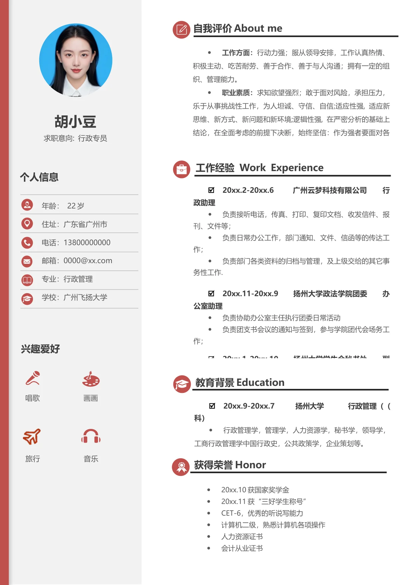

胡小豆
求职意向: 行政专员
个人信息
年龄： 22 岁
住址：广东省广州市
电话：13800000000
邮箱：0000@xx.com
专业：行政管理
学校：广州飞扬大学
工作经验 Work Experience
兴趣爱好
þ
20xx.9-20xx.7 扬州大学 行政管理（（
科）
行政管理学，管理学，人力资源学，秘书学，领导学，
工商行政管理学中国行政史，公共政策学，企业策划等。
唱歌 画画
教育背景Education
20xx.10 获国家奖学金
20xx.11 获“三好学生称号”
CET-6，优秀的听说写能力
计算机二级，熟悉计算机各项操作
人力资源证书
会计从业证书
旅行 音乐
获得荣誉Honor
自我评价About me
工作方面：
行动力强；服从领导安排，工作认真热情、
积极主动、吃苦耐劳、善于合作、善于与人沟通；拥有一定的组
织、管理能力。
职业素质：
求知欲望强烈；敢于面对风险，承担压力，
乐于从事挑战性工作，为人坦诚、守信、自信;适应性强, 适应新
思维、新方式、新问题和新环境;逻辑性强, 在严密分析的基础上
结论，在全面考虑的前提下决断，始终坚信：作为强者要面对各
þ
20xx.2-20xx.6 广州云梦科技有限公司 行
政助理
负责接听电话，传真、打印、复印文档、收发信件、报
刊、文件等；
负责日常办公工作，部门通知、文件、信函等的传达工
作；
负责部门各类资料的归档与管理，及上级交给的其它事
务性工作.
þ
20xx.11-20xx.9 扬州大学政法学院团委 办
公室助理
负责协助办公室主任执行团委日常活动
负责团支书会议的通知与签到，参与学院团代会场务工
作；
þ
20xx 1
20xx 10
扬州大学学生会秘书处
副